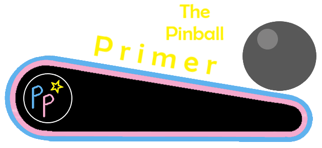

Master the precise power skill shot so that you collect 3,300 points every time you plunge a ball. The goal is to plunge so that the ball goes as far up the ramp at the back as possible without going over. After you make the skill shot, repeatedly lock a ball in the left Volcano saucer for an additional skill shot, then release that ball using the right side mushroom bumper for a random award from 1,000 to 5,000 points. Whenever possible, hit the leftmost of the two red standup targets or the rightmost mushroom bumper to zip the flippers together and close off the chance at a center drain. An alternate way of locking a ball for multiball is by shooting the tar pit shot in the top right, then hitting the center mushroom bumper 3 times.
The skill shot is a precise-power plunge that crosses the table then climbs the ramp in the back of the game. The goal is to go as far up the ramp as possible, then come back down instead of flying off the end. On the way up, the first three switches each score 100 points and light one of the three pop bumpers in the game for 100 points instead of 10. If the fourth switch of the ramp is hit, the first three will increase in value to 1,000 points each if the ball goes back down the ramp. However, if the ball goes over the edge of the ramp, all you get is 10 points as the ball leaves the skill shot area. If the plunge fails to hit the fourth switch, the first three switches will be worth another 100 points each on the way down. A perfect skill shot, then, scores 3,300 points- 300 on the way up, then trigger the fourth switch, then 3,000 on the way down. Be careful of that return back down the ramp, as it can be very fast.
Shoot a ball into the left saucer and it will lock there. The five inserts to the right of the saucer will scan. Hit the far right mushroom bumper to zip the flippers together, eject the ball from the left saucer for multiball, and score the value of whichever scanning insert is lit- this can be 1,000, 2,000, 3,000, 4,000, or 5,000 points, and is effectively random. A ball can be re-locked in the saucer at any time, but this does end the multiball if there were two balls in play.
The top right lane is the tar pit lock. Shoot it, and a ball will be locked in the topmost of the three positions along the right side of the game. When a ball is in this structure, hit the center mushroom bumper to score 1,000 points and both the ball down the right side by one position, in addition to the normal effect of closing the flippers. Do this three times and the locked ball will be thrown out of the tar pit and added to the playfield for multiball. Again, a ball can be re-locked here at any time, and doing so gives another skill shot chance.
The Volcano lock and Tar pit lock can be combined, with 3-ball multiball available if a locked ball is released from both methods. There are no special features or scoring in multiball, just the ability to have 2 or 3 balls flying around the playfield, hitting things and scoring points.
Four Million B.C. does not have in lanes. The flippers back up directly to the centermost corners of the slingshots. The leftmost red standup target and the far right mushroom bumper zip the flippers together, moving them inward and rotating them so that they form a barrier against a center drain. The right red standup target and the center mushroom bumper reopen the flippers.
The three rollover buttons in the lower center of the table activate or deactivate the left out lane kickback and the shooter lane gate as indicated. If the kickback is on, balls in the left out lane will automatically be kicked back into play. If the gate is open, balls can reenter the shooter lane from the playfield, instantly giving another skill shot chance. One or the other will always be available, but never neither and never both.
Out lanes score 1,000 points each. There is no end of ball bonus, nor is there any way to earn an extra ball.
All copyrighted names and terms in this document belong to their respective owners. The information provided in this document is for educational purposes only and no infringement is intended.
Back to top To game list To main page